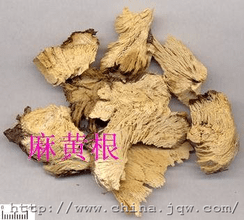
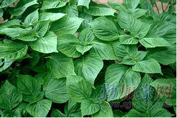

- 帮你看懂中医眼科病历
- 科室负责人简介
- 趣味中医药
- 解密中医特色疗法
- 中医药养生保健小讲堂
- 时令小贴士
- 反馈信箱
中医眼科常见眼科疾病名词解释
外障疾病篇
胞睑病
针眼 stye
以眼睑边缘生疖，形如麦粒，赤肿痒痛，易成脓为主要表现的眼病。相当于睑腺炎。
胞生痰核 phlegm nodule in eyelid
以眼睑内生核状硬结，触之不痛，肤色如常，推之皮肤可移为主要表现的眼病。相当于睑板腺囊肿。
风赤疮痍 wind-red sore
以眼睑皮肤红肿灼痛，起水疱或丘疹，溃后糜烂胶黏，结痂脱落并遗留瘢痕为主要表现的眼病。
睑弦赤烂 ulcerous eyelid margin; marginal blepharitis
以眼睑边缘红赤、溃烂、痒痛为主要表现的眼病。相当于睑缘炎。
胎风赤烂 infantile marginal blepharitis
初生婴儿洗眼不净，秽汁浸渍于眼，以眼睑红赤湿烂，眵黏，多泪为主要表现的眼病。
眼丹 eyelid cellulitis
以眼睑红肿高起、质硬拒按，边界清楚，鲜红如涂丹，甚则成脓为主要表现的眼病。相当于眼睑蜂窝组织炎。
上胞下垂 drooping of upper eyelid; blepharoptosis
又称“上睑下垂”。以眼睑上胞抬举乏力或不能提举而影响视瞻为主要表现的眼病。
胞轮振跳 twitching eyelid; blepharospasm
以眼睑不自主牵拽跳动为主要表现的眼病
粟疮 millet score; follicular conjunctivitis
以眼睑内面泡样颗粒丛生，色黄而软，状如粟米为主要表现的眼病。相当于滤泡性结膜炎。
胞肿如桃 peach-like swelling of eyelid
以眼睑红赤热痛，高肿如桃，睑闭难睁为主要表现的眼病。
倒睫拳毛 trichiasis and entropion
眼睑筋肉紧束拘挛，以眼睑弦内卷，睫毛倒入，内刺眼珠，畏光流泪为主要表现的眼病。
睑内结石 conjunctival lithiasis
以眼睑内生黄白色小颗粒，质硬突起，眼部碜涩不适为主要表现的眼病。相当于睑结膜结石症。
眦病
流泪 lacrimation;dacryorrhea
以泪液不循常道而溢出睑弦为主要表现的眼病。
漏睛 leaking eye; chronic dacryocystitis
以内眦部常有黏液或脓汁自泪窍处溢出的眼病。相当于慢性泪囊炎。
漏睛疮 leaking eye score; acute dacryocystitis
以内眦附近，睛明穴下方突然炽热肿痛高起，继之溃破出脓为主要表现的眼病。相当于急性泪囊炎。
胬肉攀睛 pterygium
以目中胬肉由眦角长出，横贯白睛，攀侵黑睛为主要表现的眼病。
白睛病
暴风客热 fulminant wind-heat invasion;acute catarrhal conjunctivitis
风热之邪，客于白睛，以卒然红赤肿胀，痒痛不适，流泪生眵为主要表现的传染性眼病。
天行赤眼 epidemic red eye; epidemic conjunctivitis
感受疫疠之气，以白睛暴发红赤，痒涩微痛，畏光流泪为主要表现的传染性眼病。
时复症 seasonal eye disease
按一定的周期节律，及期而发，过期而愈，如花如潮，循环往复的眼病。
时复目痒 seasonal eye itching
以发病时白睛红赤，痒极难忍，每年至期而发，过期乃愈，呈周期性反复发作为主要表现的眼病。
金疳 metal gan
以白睛表层发生灰白色形如玉粒小泡，周围绕以赤脉为主要表现的眼病。
火疳 fire gan
以白睛里层呈局限性紫红色结节隆起，触之疼痛，白睛红赤为主要表现的眼病。
白涩症 dry eye
以白睛赤肿不显，干涩不爽为主要表现的眼病。
白睛溢血 hemorrhagic white of eye; subconjunctival hemorrhage
以白睛表层下出血鲜红，状如胭脂为主要表现的眼病。相当于结膜下出血。
白睛病
暴风客热 fulminant wind-heat invasion;acute catarrhal conjunctivitis
风热之邪，客于白睛，以卒然红赤肿胀，痒痛不适，流泪生眵为主要表现的传染性眼病。
天行赤眼 epidemic red eye; epidemic conjunctivitis
感受疫疠之气，以白睛暴发红赤，痒涩微痛，畏光流泪为主要表现的传染性眼病。
时复症 seasonal eye disease
按一定的周期节律，及期而发，过期而愈，如花如潮，循环往复的眼病。
时复目痒 seasonal eye itching
以发病时白睛红赤，痒极难忍，每年至期而发，过期乃愈，呈周期性反复发作为主要表现的眼病。
金疳 metal gan
以白睛表层发生灰白色形如玉粒小泡，周围绕以赤脉为主要表现的眼病。
火疳 fire gan
以白睛里层呈局限性紫红色结节隆起，触之疼痛，白睛红赤为主要表现的眼病。
白涩症 dry eye
以白睛赤肿不显，干涩不爽为主要表现的眼病。
白睛溢血 hemorrhagic white of eye; subconjunctival hemorrhage
以白睛表层下出血鲜红，状如胭脂为主要表现的眼病。相当于结膜下出血。
黑睛病
聚星障 clustered-star nebula; herpes simplex keratitis
以黑睛骤生多个细小星翳，伴有涩痛、畏光、流泪为主要表现的眼病。相当于单纯疱疹病毒性角膜炎。
花翳白陷 petaloid nebula with a sunken center; ulcerative keratitis
以黑睛生翳，灰白混浊，四周高起，中间低陷，形如花瓣为主要表现的眼病。
湿翳 wet nebula; fungal keratitis
以黑睛生翳，表面微隆起，状如豆腐渣，干而粗糙为主要表现的眼病。
凝脂翳 congealed-fat nebula; bacterial keratitis
以黑睛生翳，表面色白或黄，状如凝脂，发病迅速，或伴黄液上冲为主要表现的急重眼病。相当于细菌性角膜炎。
黄液上冲 upward rushing of yellow fluid; hypopyon
以黑睛与黄仁之间积聚黄色脓液，黑睛周围抱轮红赤，并伴疼痛，羞明、流泪等为主要表现的急重眼病。
蟹睛 crab-eye; corneal perforation and iridoptosis
以黑睛溃破，黄仁自溃口绽出，黑亮如蟹之眼睛为主要表现的眼病。
混睛障 murky-eye nebula; stromal keratitis
以黑睛深层起灰白色翳障一片，混浊如雾，浸掩黑睛，妨碍视力，且羞明流泪，眼珠疼痛为主要表现的眼病。相当于角膜基质炎。
暴露赤眼生翳 nebula due to exposed cornea; exposure keratitis
以眼睑闭合不全，黑睛长期暴露而生翳为主要表现的眼病。相当于暴露性角膜炎。
神水将枯 exhaustion of spirit water
津液亏损，泪液极度减少，导致目珠干燥失泽，黑睛生星翳为主要表现的眼病。
外障疾病篇
黄仁疾病
瞳神紧小 contracted pupil; iridocyclitis
以瞳神持续缩小，展缩不灵，多伴有抱轮红赤、神水不清，眼痛等为主要表现的眼病。
瞳神干缺 dry defective pupil;pupil-lary metamorphosis
以黄仁与晶状体黏着，致瞳神边缘参差不齐，呈锯齿状或花瓣状，部分或全部失去展缩功能，黄仁色泽干枯不荣为主要表现的眼病。
五风内障
青风内障 blue wind glaucoma
以起病无明显不适，瞳色微混如青山笼淡烟之状，视野日渐缩窄，终至失明为主要表现的眼病。绿风内障的早期。
绿风内障 green wind glaucoma
以眼珠胀硬，瞳神散大，瞳色淡绿，抱轮赤红，头眼剧痛，视力骤降为主要表现的急性眼病。甚至转变成黄风内障。相当于急性闭角型青光眼。
黄风内障 yellow wind glaucoma
由绿风内障失治而成，以瞳神散大、晶状体混浊呈淡黄色、目盲为主要表现的眼病。
乌风内障 dark wind glaucoma
以眼珠胀痛，视物模糊，瞳神气色昏暗，日久变乌为主要表现的眼病。
黑风内障 black wind glaucoma
以头眼胀痛，眼前时起黑花，视力下降，眼珠胀硬，瞳神散大且气色昏黑为主要表现的眼病。与绿风内障症状相同，体征不同。
晶珠疾病
圆翳内障 round nebular cataract; senile cataract
以晶状体混浊，视力缓降，渐至失明，在瞳神中出现圆形白色翳障为主要表现的慢性眼病。相当于老年性白内障。
惊震内障 traumatic cataract
为眼部外伤，以晶状体混浊变白，视力下降为主要表现的眼病。
胎患内障 congenital cataract
以小儿出生后晶状体混浊，影响视力为主要表现的眼病。
金花内障 golden flower cataract
以眼珠红痛或视力下降后，出现晶状体混浊，并伴瞳神干缺或缩小为主要表现的眼病。
神膏疾病
云雾移睛 fog moving before eye; vitreous opacity
以眼外观端好，自觉眼前似有蚊蝇或云雾样黑影飞舞飘移，严重时影响视力为主要表现的眼病。相当于玻璃体混浊。
血灌瞳神 hyphema and vitreous hemorrhage
血不循经，溢于瞳神内外，以视力骤降，眼前阴影飘荡为主要表现的眼病。
视衣疾病
暴盲 sudden blindness
以眼外观端好，而一眼或双眼视力急剧下降至失明为主要表现的眼病。包括眼底血管性疾病及视神经疾病，如视网膜静脉阻塞、视网膜动脉阻塞、视网膜血管炎、急性视神经炎、缺血性视神经病变等。
视瞻昏渺 obscured vision
以眼外观无异常，而视力逐渐减退，至视物模糊不清为主要表现的眼病。
视瞻有色 colored shade before eye
以眼外观正常，自视眼前有带色阴影遮隔，视物昏蒙为主要表现的眼病。
视物易形 shape blindness
以眼外观如常，自觉视物失去本来形状为主要表现的眼病。
视直如曲 straight thing seen as crooked; metamorphopsia
以患眼视正直之物如弯曲变形之状为主要表现的眼病
视物易色 color
以两眼不能正常辨认物体颜色为主要表现的眼病。
高风雀目 high-wind sparrow eye
眼外观端好，以夜盲和视野日渐缩窄为主要表现的眼病。
肝虚雀目 liver-deficiency sparrow eye
以入暮则视物不清，天晓复明，而无视野缩小的表现，伴眼干涩羞明，频频眨动为主要表现的眼病。
目系疾病
青盲 blue blindness; optic atrophy
以眼外观端好，而视力渐降至失明为主要表现的眼病。
其他
眼外肌疾病与弱视
通睛 crosseye; concomitant esotropia
以双眼同时注视时，目珠偏于内侧为主要表现的眼病。
风牵偏视 wind-induced squint; paralatic strabismus
以眼珠突然偏斜，转动受限，视一为二为主要表现的眼病。
目偏视 squint;strabismus
以双眼注视前方时，眼珠偏离正位，或内或外，或上或下为主要表现的眼病。
眼眶疾病
眉棱骨痛 pain in supraorbital bone; supraorbital neuralgia
以攒竹穴处为主的眉棱骨部疼痛为主要表现的眼病。
突起睛高 sudden eyeball protrusion
以眼珠胀痛，转动失灵，白睛赤壅，目痛难忍，眼珠高高突起为主要表现的急性眼病。
鹘眼凝睛 staring falcon eye;exophthalmos
以眼珠突出，红赤若鹘鸟之眼，呈凝视状为主要表现的眼病。
眼外伤
眉棱骨痛 pain in supraorbital bone; supraorbital neuralgia
以攒竹穴处为主的眉棱骨部疼痛为主要表现的眼病
突起睛高 sudden eyeball protrusion
以眼珠胀痛，转动失灵，白睛赤壅，目痛难忍，眼珠高高突起为主要表现的急性眼病。
鹘眼凝睛 staring falcon eye;exophthalmos
以眼珠突出，红赤若鹘鸟之眼，呈凝视状为主要表现的眼病。
—2013年中医药学名词审定委员会
（成都中医大银海眼科医院段俊国院长担任委员）
中医眼科常用眼部结构名词解释
黑睛 black of the eye；cornea
又称“角膜”。眼球外壁前部中央占外层的1/6无色透明的组织，是光线透进眼内必经的通路，是通光体之一，有保护眼珠的作用。
白睛 white of the eye
眼球外壁占5/6的白色不透明的，质地致密而坚韧的巩膜和其表面疏松透明的球结膜，具有保护眼球的作用。
黄仁 iris
又称“虹膜”。位于晶状体与睫状体之前，角膜后，中央有圆孔的环形色素膜样组织，将眼球前端空间腔分为前房和后房。
瞳神 pupil
又称“瞳孔”。位于黑睛后方，黄仁（虹膜）中央，形圆而能伸缩的圆孔，有调节进入眼内光线的作用。
神水 spirit water; aqueous humor
又称“房水”。由睫状突产生的无色透明的液体。
神膏 spirit jelly; vitreous body
又称“玻璃体”。无色透明的半胶冻状物质，充填于玻璃体腔内，前界为晶体悬韧带和睫状体，后界为视网膜视神经，容积约为4.5ml。
目内眦 inner canthus
内眼角
目外眦 outer canthus
又称“目锐眦”。外眼角。
泪窍 lacrimal apparatus
又称“泪点”。上下睑弦内鼻侧端排泄泪液的小孔窍。
—2013年中医药学名词审定委员会
（成都中医大银海眼科医院段俊国院长担任委员）
中医眼科常用诊断术语解释
目赤 red eye;conjunctival hyperemia
又称“白睛红赤”。双眼或单眼白睛部位发红的表现。即球结膜充血。
抱轮红赤 redding surrounding the black of the eye;ciliary hyperemia
环绕黑睛周围的白睛红赤，赤环如带，压之红赤不退，推之血丝不移的表现。即睫状充血。
目眵 cpiphora
眼的分泌物。
翳 （1）nebula (2)lens opacity
（1）狭义专指起于黑睛上的混浊。（2）广义则包括瞳神内晶状体的混浊。
新翳 new nebula
黑睛混浊，呈灰白色，表面粗糙，边界模糊，具有发展趋势，伴有不同程度的目赤疼痛、畏光流泪等表现。
宿翳 old nebula;corneal scar
黑睛疾患痊愈后，结成瘢痕，表面光滑，黑睛混浊，边缘清楚，无红赤疼痛的表现。
目涩 dry and uncomfortable eye
眼睛干燥少津，沙涩不适，易感疲劳的表现。
畏光 Photophobia
又称“羞明”。眼睛怕光，每遇明亮场所，眼睛涩痛、流泪，畏视难睁的表现。
目眩 dizziness
又称“眼花”。自觉眼前发黑，视物昏花晃动，看不清楚的表现。
视歧 double vision; diplopia
又称“复视”。看东西时将一个物体看成两个的表现。
视惑 disturbed vision
视物颠倒、紊乱、变异的表现、
目妄见 heteroptics
目外观如常，自觉所见物体旋转倒置的表现。
视物颠倒 upside down vision
眼外观正常，自觉所见物体旋转倒置的表现。
目晕 （1）arcus senilis(2)halo vision
（1）沿黑睛与白睛交界处有灰白色、失其晶莹环状混浊的表现。（2）患眼视观灯火时有彩虹光环围绕的自觉症状。
—2013年中医药学名词审定委员会
（成都中医大银海眼科医院段俊国院长担任委员）
中医眼科中心主任周华祥
周华祥同志从事中医眼科临床、科研、教学工作三十余年，遵纪守法，爱岗敬业，团结同事，其良好品德、敬业精神及团队意识深受同事及单位领导的嘉许，曾获得“优秀共产党员”、“优质服务标兵”称号。
系统研读了《秘传眼科龙木论》、《银海精微》、《审视瑶函》等古典眼科专著二十余部，奠定了较深厚的中医眼科专业理论功底。为强化现代医学知识，2000年在华西医科大学“硕士研究生课程班”脱产学习硕士研究生理论课程一年，2007年-2010年进入“四川省首届十大名中医廖品正教授工作室”,跟随廖品正教授师承学习四年，并顺利通过四川省中医药管理局全面考核而结业。1999年即被选拔为四川省中医药管理局“学术技术带头人后备人选”进行培养，获省中医药管理局5万元培养经费，2015年被评为“第十一批四川省学术和技术带头人”、“四川省拔尖中医师”。
周华祥同志在善于理论结合实际，探讨眼科难症、重症的新治疗途径并获得较好效果，如将金元时代医家刘完素提出的“玄府”理论运用于视神经疾病，提出“开玄府、利清窍、活血脉、补肝肾”四步递进治法治疗视神经萎缩，在国内中医眼科界有较大影响；将《金匮要略》、《血证论》“死血”、“干血”理论结合与眼科临床，运用软坚散结、祛痰散结、活血散结方药治疗视网膜玻璃体出血；将“黄斑属脾”、“瘀血化水”、“肾虚血瘀”理论运用于糖尿病性视网膜病变及其黄斑水肿的临床治疗等均取得较好疗效，其中部分已运用于国家中医药管理局重点病种研究及单病种诊疗常规和临床路径。
迄今主持、主研课题16项，内容涵盖基础理论、新药开发、病症机理、预防保健等领域，课题层次包括国家自然科学基金、国家新药基金、“十五”国家科技攻关计划、国家重点科技项目（攻关）计划及省、厅局级研究项目。先后获得四川省科技进步二等奖1项，三等奖2项，国家中医药管理局科技进步三等奖2项。作为主研人员参与的“糖尿病微血管病变中医证效基础与临床循证研究”课题，在中医药防治糖尿病微血管病变方面，取得一系列重大成果，获2013年四川省科技进步特等奖。
重视中医古籍文献和学术技术的保护与传承工作，以其较深厚的国学功底，在作为副主编编纂《中华大典·眼科总部》及参编《实用中医辞典》的工作基础上，开展了较系统的中医眼科古籍文献整理、研究工作，主持国家中医药管理局课题“中医药古籍文献整理与利用能力建设·四川项目·眼科要方、眼科阐微”。积极推动中医眼科古籍文献数据库的建设工作，已收集、录入中医眼科古典文献58部156万余字，校订38万字，使我省中医眼科古籍文献的收集、整理、研究工作居于国内领先地位，也为保护我国眼科古籍善本、珍本、孤本作出了贡献。主持“川派中医名家陈达夫教授学术思想及临床经验研究”课题，系统整理、发掘我国著名中医眼科学家陈达夫教授及其传人的学术流派特点，为唱响川派中医，发扬我省中医药特色优势起到了积极作用。
被选举为四川省中医药学会眼科专业委员会常务副主任委员，中华中医药学会眼科分会委员，四川省医学会眼科专业委员会委员、四川省康复医学会眼科分会委员。利用中医药学会、学术技术网络、互派交流等方式，促进我省中医眼科事业的发展。为发展基层中医单位眼科工作，曾先后长时间到乐山、峨眉等中医院蹲点参与日常临床工作、指导眼科业务。在省中医药管理局支持下，推动组建了由绵阳、剑阁、遂宁、乐山、什邡等省内10家市县级中医院组成的“四川省中医眼科学术技术网”，为发挥省中医院眼科龙头作用，加速我省基层医院中医眼科事业发展，提高我省整体中医眼科临床技术水平作出了贡献。
药名猜谜（网络搜集）
-
- 1.百两银子买张皮(桂皮)
- 2.牧童(牵牛子)
- 3.石头生苔(滑石)
- 4.九九归一(百合)
- 5.穿群而过(贯众)
- 6.寒冬腊月纸糊窗(防风)
- 7.胸有大略(远志)
- 8.药铺关门(没药)
- 9.30÷5(商陆)t
- 10.举国同庆(合欢)
- 11.月中神树(桂枝)
- 12.红色顾问(丹参)
- 13.五月初五(半夏)
- 14.苦熬三九(忍冬)
- 15.剧院灯熄(台乌)
- 16.人工育珠(附子)
- 17.警惕家人(防己)
- 18.机构繁多(百部)
- 19.大雪纷飞(天花粉)
- 20.穿林而过(木通)
- 21.骨科医生(续断)
- 22.演讲技巧(白术)
- 23.天府之宝(川贝)
- 24.打开信来半字无(白芷)
- 25.皇帝送客(王不留行)
-
- 26.出类拔萃(珍珠)
- 27.酸咸苦甘辛(五味子)
- 28.冰碑(寒水石)
- 29.故乡(熟地)
- 30.黑龙江(川乌)
- 31.空心树(木通)
- 32.长t辣椒(细辛)
- 33.珍珠蚌(贝母)
- 34.如来的巴掌(佛手)
- 35.吴刚的后代(天仙子)
- 36.老寿星(千年健)
- 37.他乡异国(生地)
- 38.植树造林(防风)
- 39.逢人开口笑(一见喜)
- 40.交际广泛(路路通)
- 41.一笔御寒费(款冬花)
- 42.千年狐裘(陈皮)
- 43.白首话当年(白前)
- 44.自己在人间(独活)
- 45.想念儿子(相思子)
- 46.云雾蔽日(锁阳)
- 47.黑色丸子(乌药)
- 48.谋士难当(苦参)
- 49.胸中荷花(穿心莲)
- 50.西湖秋萸(杭菊)
-
- 52.初入其境(生地)
- 53.长生不老(万年青)
- 54.老娘获利(益母草)
- 55.假期休完(当归)
- 56.老实忠诚(厚朴)
- 57.众人皆死吾自生(独活)
- 58.越来越轻(薄荷)
- 59.浪费钱财(金银花)
- 60.有言在先(白前)
- 61.鲜奶芬芳(乳香)
- 62.木兰涂脂(花粉)
- 63.天女散花(降香)
- 64.任人唯贤(使君子)
- 65.实而不华(无花果)
- 66.植物学家(通草)
- 67.无价之宝(金不换)
- 68.旭日东升(阳起)
- 69.天池洞水(泽泻)
- 70.千古留芳(安息香)
- 71.心心相印(莲心)
- 72.金秋时节(地黄)
- 73.蓬莱之音(神曲)
- 74.冰山雪莲(忍冬花)
- 75.女红军(红娘子)
-
- 76.中流以北即天涯(川断)
- 77.自由自在(逍遥散)
- 78.山山相连(脉通)
- 79.绿林好汉(草蔻)
- 80.龙王跨下驹(海马)
- 81.天涯思故乡(怀熟地)
- 82.峨嵋第一峰(川山甲)
- 83.他乡遇故知(一见喜)
- 84.皇帝身上袍(龙衣)
- 85.万物齐眠梦中幽(全蝎)
- 86.三九时节冷飕飕(天冬)
- 87.二十一天不下雨(旱三七)
- 88.四大金刚弹琵琶(神曲)
- 89.五百公里一片明(千里光)
- 90.中秋佳节发书信(八月札)
- 91.十个世纪才见面(千年见)
- 92.名郎中勿医相思病(没药)
- 93.百岁老人鬓如霜(白头翁)
- 94.卷我屋上三重茅(飞扬草)
- 95.儿童节放假(六一散)
- 96.茅塞顿开(脑立清)
- 97.果在刺中央，秋来满山冈，核仁是良药,
- 安神作用强。(酸枣仁)
- 98.美丽一姑娘，家住高山上，只因心肠善，
- 为人专治疮。(山慈姑)
中药对联（网络搜集）
-
- （1）上联：烦暑最宜淡竹叶。下联：伤寒尤妙小柴胡。
- （2）上联：海龙海马通四海。下联：红花红藤映山红。
- （3）上联：琥珀青黛将军府。下联：玉竹重楼国老家。
- （4）上联：金钗布裙过半夏。下联：栀子轻粉迎天冬。
- （5）上联：红娘合欢一见喜。下联：紫苑迎春广木香。
-
- （6）上联：霞天采云千里光。下联：仙鹤太子万年青。
- （7）上联：谈史有怀经世略。下联：验方常著活人书。
- （8）上联：独有痴儿惭远志。下联：更无慈母望当归。
- （9）上联：秋风橘井落甘露。下联：春雨杏林别有天。
- （10）上联：红花红豆红娘子。下联：白梅白果白头翁。
-
- （11）上联：苏子条芩访禅友。下联：杜仲草果宴寿客。
- （12）上联：降香木香香附满店。下联：黄药白药山药齐全。
- （13）上联：白头翁牵牛耕熟地。下联：天仙子相思配红娘。
- （14）上联：女贞子打马过淮山。下联：红娘子相思配槟榔。
- （15）上联：白头翁独活度残岁。下联：使君子合欢寿延年。
小故事（网络搜集）
一麻黄草药的小故事
有个挖药的老人，无儿无女，收了一个徒弟。谁想，这个徒弟很是狂妄，才学会一点皮毛，就看不起师傅了。有的时候，卖药的钱也不交给师傅，自己偷偷花掉。师傅伤透了心，就对徒弟说：“你翅膀硬了，另立门户吧
徒弟倒满不在乎：“行啊！”师傅不放心地说：“不过，有一种药，你不能随便卖给人吃。”“什么药？”“无叶草。”“怎么啦？“这种草的根和茎用处不同；发汗用茎，止汗用根，一朝弄错，就会死人！记住了吗？”“记住了。” “你背一遍。”徒弟张口就背了一遍，不过，他背时有口无心，压根儿也没用脑子想。
从此，师徒分手，各自卖药。师傅不在眼前，徒弟的胆子更大了，虽然认识的药不多，却什么病都敢治。没过几天，就让他用无叶草治死了一个。死者家属哪肯善罢甘休，当时就抓住他去见县官。县官问道：“你是跟谁学的？” 徒弟只好说出师傅的名字。县官命人把师傅找来，说：“你是怎么教的？让他把人治死了！” 师傅说：“小人无罪。”“怎么能说你无罪？”“关于无叶草，我清清楚楚地教过他几句口诀。”县官听了，就问徒弟： “你还记得吗？背出来我听听。” 徒弟背到：“发汗用茎，止汗用根，一朝弄错，就会死人。” 县官又问：“病人有汗无汗？”徒弟答道：“浑身出虚汗。” “你用的什么药？”“无叶草的茎。”
县官大怒：“简直是胡治！病人已出虚汗还用发汗的药，能不死人？”说罢，命人打了徒弟四十大板，判坐三年大狱。师傅没事，当堂释放。徒弟在狱中过了三年，这才变得老实了。他找到师傅认了错儿，表示痛改前非。师傅见他有了转变，这才把他留下，并向他传授医道。打这儿起，徒弟再用“无叶草”时就十分小心了。因为这种草给他闯过大祸惹过麻烦，就起名叫作“麻烦草”，后来又因为这草的根是黄色的，才又改叫“麻黄”。
二紫苏草药的小故事
九月九日重阳节，一群富家子弟在酒店里比赛吃螃蟹。一只只大螃蟹又多油又黄，他们越吃越香。吃空的蟹壳竟在桌上堆成了一座小塔。 华佗带着徒弟，也到这儿来饮酒。他看到那伙少年象疯了似地比赛吃蟹，便好心地劝说道： “螃蟹性寒，不可多吃。年轻人，你们比赛吃螃蟹可没有好处。”少年们很不高兴：“我们吃的是自己花钱买的东西，谁听你的管教！”华佗说：“吃多了准会闹肚子，那时侯可有生命危险啊！”“去去去，别在这儿吓唬人！我们就是吃死了，又关你屁事！”这些醉醺醺的少年根本不听劝告，继续大吃大喝。有的还嚷道：“螃蟹是美味，谁听说过能吃死人？咱们放开肚子吃咱们的，馋死那个老头子！”
华佗看他们闹得实在不象话，就对酒店老板说：“不能再卖给他们啦，会闹出人命的。”酒店老板正打算从那伙少年身上多赚些钱哩，哪里听得进华佗的话？他把脸一板，说：“就是出了事也不关你呀。你先生少管闲事，别搅了我的生意！”
华佗叹息一声，只好坐下吃自己的酒。等到半夜，那伙少年突然大喊肚子疼，有的疼得直冒汗，有的翻倒在桌下打滚儿。酒店老板吓呆了，急忙问：“你们是怎么啦？”“疼坏了，快帮我们请个医生来吧！”“这半夜三更的，让我上哪儿请医生去？”“求求老板行个好，医生再不来，我们的命就难保啦！” 这时，华佗走过来说： “我就是医生。”“呀！”少年们大惊失色：这不是那位不让多吃螃蟹的老头儿么？他们也顾不得什么面子了，一个个捧着肚皮，哀求道：“先生，请你给治治吧！”“你们刚才不是说不让我管吗？”华佗说。“大人不记小人过。求先生发发善心，救救我们。您要多少钱都好说。”“我不要钱。”“那您想要别的也行。”“我要你们答应一件事！”“别说一件，一千件、一万件也行。您快说什么事吧？”
“今后，你们得听从老人的劝告，再不准胡闹！”“一定，一定。您快救命！” 华佗让他们等着，自己带着徒弟到了荒郊野外，采了些紫草的茎叶回来，煎汤给少年们喝下。过了会儿，他们的肚子都不痛了。华佗问： “喝了这药，觉得怎么样？”“舒服多了。”华佗心想：这种药草还没名字，病人吃了它确实会感到舒服。今后就叫它“紫舒”吧！少年们千恩万谢，告别华佗，回家了。华佗又对酒店老板说：“好险啊，你以后千万不能光顾赚钱，不管人家性命啊！” 酒店老板连连点头。华佗离开酒店，徒弟问道： “这紫草叶子解蟹毒，出在什么书上？”华佗告诉徒弟说书上并没有，这是他从动物那儿学来的。
原来有一年夏天，华佗在江南的一条河边上采药。他看见一只水獭逮住一条大鱼。水獭吞吃了很长时间，把肚皮撑得象鼓一样。它一会儿水里，一会儿岸上；一会儿躺下不动，一会儿来回折腾。看来，这水獭难受极了。可是后来，它爬到岸边一片紫草旁边，吃了些草叶，又躺下会儿竟没事了。华佗心想，鱼类属凉性，紫草属温性，紫草准可以解鱼毒。从此，他便记在了心上。
后来，华佗还把紫草的茎叶制成完和散。他又发现这种草药还具有表散的功能，可以益脾、利肺、理气、宽中、止咳、化痰，能治很多病症。本来，因为这种药草是紫色的，吃到腹中很舒服，所以，华佗给它取名叫“紫舒”，可不知怎的，后来人们把它叫作“紫苏”了——这大概是音近的缘故，弄混了吧。